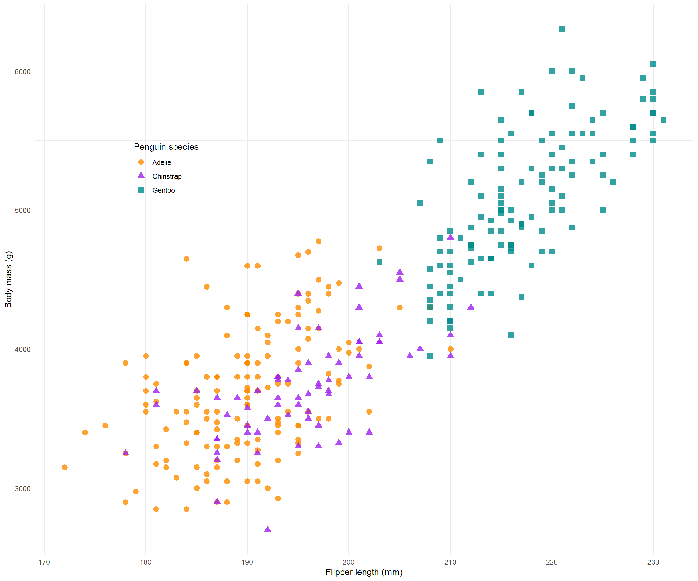

```{r}
6*7
```[1] 42Uses markdown syntax
Accepts multiple programming languages
Outputs multiple formats (Word, PDF, HTML…)
Easy to learn and transfer skills from other languages
R Markdown and Jupyter also support multiple languages too…
You decide ʕ•́ᴥ•̀ʔっ
What you learn here is generalisable!

Version control your projects
Generate a citable DOI and use for supplimentary information
Reproducibility: whole workflow from data to results in one place
Host a live link consistent with current results (no more copy paste 7 plots into a word doc each time you change something!)
Coding colaborators can contribute via a Git workflow
Communicate results to non-coding collaborators
Learn the necessary components of a Quarto document to publish an HTML
Publish an example link on GitHub
Have a working template you can use in the future
Know where to find help and useful resources
Camera optional, but we love to see you (really, it helps me a lot!)
During exercises, give me a ✔️ when you are done or a ✋ if you need help
Drop questions in the Zoom chat or raise a hand at any time
Go to the session repo
Fork the repository
Open up VS Code and navigate to the source control
Open up the install.R and template.qmd files
We are using VS Code, R, and GitHub. If you have a preferred workflow like RStudio, Python, or GitKraken you can use them but may be harder to follow the session content. Afterall, Quarto is supposed to be flexible!
YAML
Text
Code blocks
References file
scss (optional for style; won’t cover this!)
The YAML is a set of key: value pairs that are the metadata for your document, such as, author, title, output format, and citation file.
YAML is whitespace sensitive
Indent sensitive
---
title: "My Manuscript"
format: html
date: today
---Your Turn 💻 :
Open up the template.qmd and fill the title: and name: and affiliation: fieds.
A couple of handy entries are already completed
The existing field: date: today will automatically generate today’s date (cool huh? ͡▀̿ ̿ ͜ʖ ͡▀̿ ̿ )
Add a table of contents following the guide
Render the document
Give me a ✔️ when done or a ✋ if you need help
Writing in Quarto uses markdown syntax
LaTeX is used to render PDFs so LaTeX commands can be used for PDF outputs
Look! I can do fancy maths: \(f_{c}=z^{2}+c\)
Render regularly. Small errors can be tricky to pick out long after they have been made.
You can change the defult so that the document renders on hitting save.
Citations require:
a .bib or .bibtex file in your working directory (one is included for today)
a YAML entry pointing to the file bibliography: refs.bib (if the file is named ‘refs.bib’)
an optional CSL file specifying the format of the bibliography.
CSL files are downloadable for specific journalsThere are alternative methods that do not require a local file, like CiteDrive.
Citing work in-text follows the @citekey format
@perkel2022 = Perkel (2022)
[@chamberlin1897; @perkel2022] = (Chamberlin 1897; Perkel 2022)
Quarto, by default, inserts a formatted reference list at the end of the document so I put an empty ‘References’ header.
We won’t go deeper into citations for now as we are not authoring an article today. The link above has info for technical writing.
Pretty, formatted equations can be inserted using the same syntax as in LaTeX. Inline equations (e.g., \(E = mc^2\)) are surrounded by a $ and equation bocks are surrounded by $$:
\[ N_{t+1} = N_t + r_{d}N_t \left(1- \frac{N_t}{K} \right) \]
The RStudio IDE has some handy features using the visual editor:
VS Code also has cool features:
Your Turn 💻 :
Check out Quarto’s markdown guide
In the template Introduction section take 3-4 minutes to write:
a sub-heading under the introduction
a list
and an equation
cite one of the articles in in existing .bib file using the @
render the document and hit the ✔️ in zoom
Code is executed when the document is rendered. Code blocks can also be executed individually just like regular R markdown if you are already familiar with that. Code blocks are inserted like this:
```{r}
6*7
```[1] 42Code block execution options options are set with a special comment: #| (white space sensitive!). Block options determine how the code is executed, e.g., whether to display the code block: #| echo: true, warning messages #| warning: false, and to input captions #| fig-cap: "A really good figure caption!".
Unlike R markdown, block options are lower case true/false and the comment #| must be followed by a space.
Execution options can also be set at the document level under the YAML entry execute::
execute:
echo: false
warning: false
format:
html:
fig-width: 8
fig-height: 6
pdf:
fig-width: 7
fig-height: 5Code can also be executed inline:
Seven times six is `r 7 * 6`Inline code execution can be helpful referencing values in text like: there are nrow(data) observations in the data.
Your Turn 💻 :
Check out the execution options and edit the existing code block options in the ‘Libraries section’ to:
display the results
exclude the code
include a figure caption
render the document and hit the ✔️ in zoom
Cache keeps a record of outputs and only re-runs code chunks that have beed edited. Caching is useful for computations that take a long time and do not need to be re-run every time you render the document. Cache can be set at the document level using the YAML entry:
execute:
cache: trueor using the ececution option #| cache: true in an individual code block.
Refil on tea, coffee, and cookies.
Tables can be displayed using code: tables in R markdown; or markdown.
There are helpful ways of generating markdown tables online: Markdown table generator; and in RStudio.
An example of generating a table using R is coming up but we won’t go into R specifics today.
Ok now the feature I find very useful: tabsets. Tabsets are great for showing, multiple results, data, code, whatever you want in tabs. Say, you want to show the plot on one tab and the model output table in the next, or multiple related plots. Much easier to read and flick among results than a long stream of plots and tables.
if (!require("pacman")) install.packages("pacman", repos="http://cran.r-project.org")Loading required package: pacmanWarning: package 'pacman' was built under R version 4.2.2pacman::p_load(ggplot2, palmerpenguins) # Install & load packages
# From: https://allisonhorst.github.io/palmerpenguins/articles/examples.html
mass_flipper <- ggplot(data = penguins,
aes(x = flipper_length_mm,
y = body_mass_g)) +
geom_point(aes(color = species,
shape = species),
size = 3,
alpha = 0.8) +
scale_color_manual(values = c("darkorange","purple","cyan4")) +
labs(x = "Flipper length (mm)",
y = "Body mass (g)",
color = "Penguin species",
shape = "Penguin species") +
theme_minimal() +
theme(legend.position = c(0.2, 0.7),
plot.title.position = "plot",
)rmarkdown::paged_table(penguins[1:50,])mass_flipper
Your Turn 💻
Tabsets are created with the following syntax:
:::{.panel-tabset}
# Tab 1
content
# Tab 2
content
:::
Check out the tabset panel documentation
Create a tabset with three tabs in the template under the Tabsets heading
render the document and hit the ✔️ in zoom
Figures can be generated directly from code (as in the tabset panel demonstration) or inserted as files using the  syntax (for more details like multi-figure layot and alt text see: figures in Quarto).
There is a (royalty free) XKCD comic inside the images directory in the repo. using the syntax described above, insert the image into one of the tabsets you just created.
render the document and hit the ✔️ in zoom
You’re now ready to host your first live link!
Render your project so that most recent changes are exported
In the source control on the left commit and push your changes
Head over to GitHub in your browser and go:
By default, your link will be hosted at: https://githubusername.github.io/reponame/pathtodocument.html
Find your hosted template link and share with the world!
Before you go! Please post in the chat:
a one up (a good thing)
and one down (a bad thing)
or email me at qasena@wisc.edu
Biostats - very useful resource for authoring documents in Quarto. This session draws from their content.
Awsome Quarto - a big list of Quarto things.